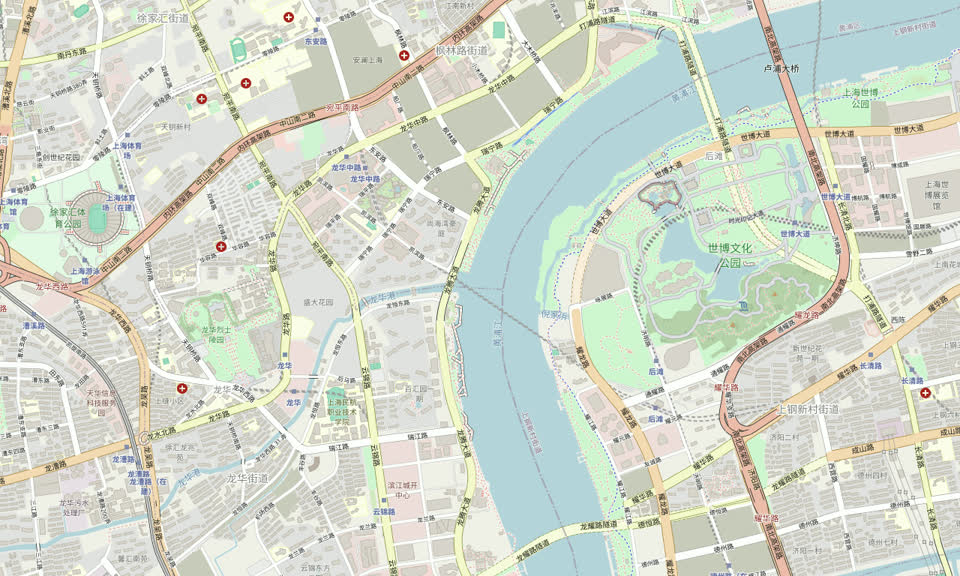

集合点卡 / 01
真实地标
龙华街道
西岸美术馆
- 地址
- 龙腾大道 2600 号
- 坐标
- 121.4593301, 31.1695893
产品演示 集合建议
把“西岸美术馆”与本卡坐标发给同行者，抵达后请以现场指引相互确认。 橙红虚线仅演示从示意起点到所选地标的产品反馈；不代表可通行路线、实时路况或实时开放状态。真实地理基底 · 集合建议为产品演示
SHANGHAI · XUHUI RIVERSIDE · 31.17°N

示意起点地图图片暂不可用没有用示意图替代真实地理。仍可从下列既有事实中选择并保存集合点卡。
龙华街道
产品演示 集合建议
把“西岸美术馆”与本卡坐标发给同行者，抵达后请以现场指引相互确认。 橙红虚线仅演示从示意起点到所选地标的产品反馈；不代表可通行路线、实时路况或实时开放状态。横向穿行 · 所有输入共享同一位置